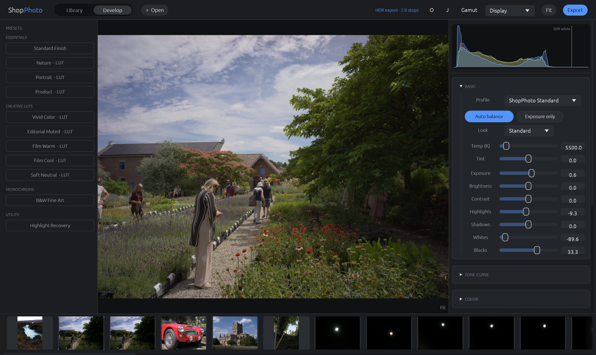
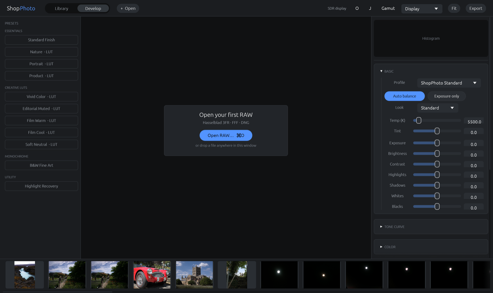

A · Studio Console
chosen
Warm-dark workspace, disciplined cards, one clear primary action, quiet technical detail. Lowest workflow disruption.
Three directions were considered. The chosen design keeps the current professional editor structure while making hierarchy, selection, actions, and HDR state easier to scan.
chosen
Warm-dark workspace, disciplined cards, one clear primary action, quiet technical detail. Lowest workflow disruption.
More image-first, floating controls and greater whitespace. Attractive, but less dense for repeated professional adjustments.
Scopes-first, numerical, compact. Strong for diagnostics, unnecessarily intimidating as the default editor.


| Element | Change | Reason |
|---|---|---|
| Tool panels | Wider sidebars, 8 px radius, more internal breathing room. | Dense without becoming cramped. |
| Auto controls | Blue primary “Auto balance”; quiet “Exposure only”; disabled without a photo; “Analyzing…” state and concise result toast. | Communicates the recommended action, progress, and outcome without competing with Export. |
| Preset list | Selected fill, accent stroke, left marker, and both a dot and asterisk when fine-tuned. | Looks behave like durable states; modification is not signaled by color alone. |
| View controls | Soft proof, gamut warning, and clipping overlays live in one marked View menu whose tooltip enumerates every active mode. | Reduces top-bar crowding while keeping diagnostic state understandable. |
| HDR state | Contained top-bar chip, clearer “Peak headroom” naming, and a continuous four-stop meter with tick marks. | Makes output state scannable and gives fractional stop values a proportional display. |
| Slider state | Small accent marker on modified controls; histogram interaction tooltip. | Shows what moved and makes hidden direct manipulation discoverable. |
| Empty state | Centered compact card with RAW formats and keyboard shortcut. | Turns unused space into a direct first step. |
| Accessibility | Brighter faint text, larger row height, and non-color selection/modification markers. | Improves legibility and reduces color-only signaling. |